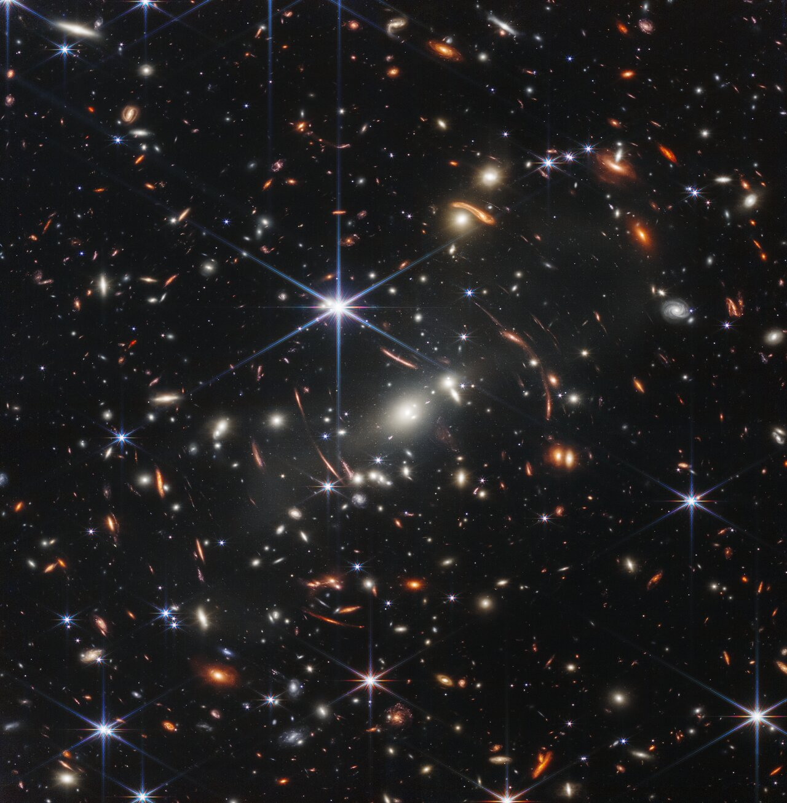
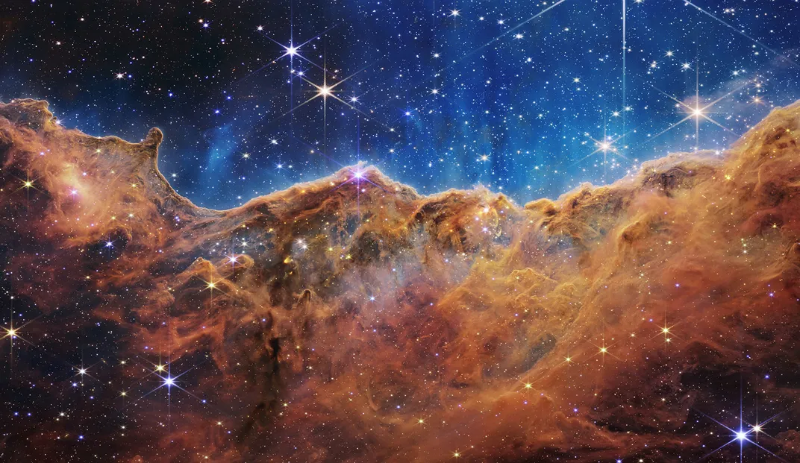
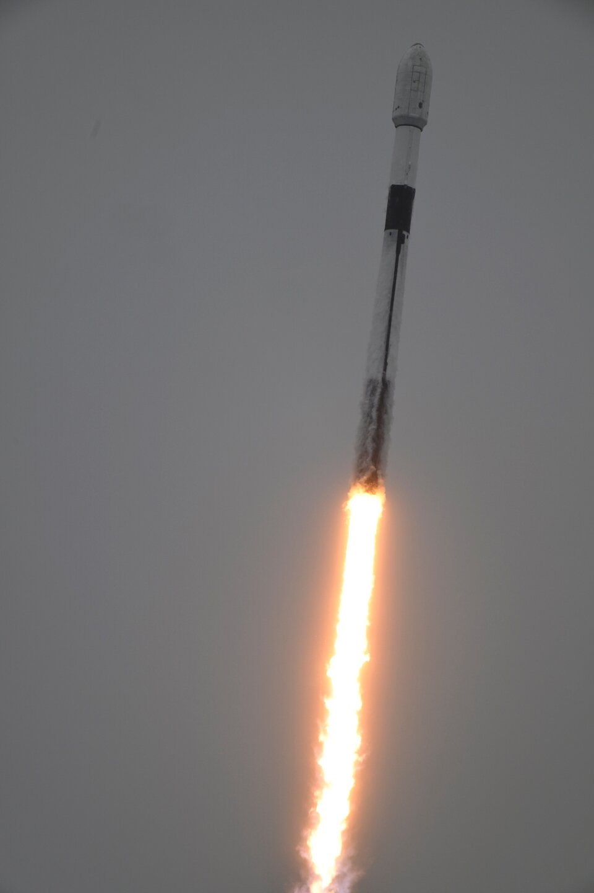
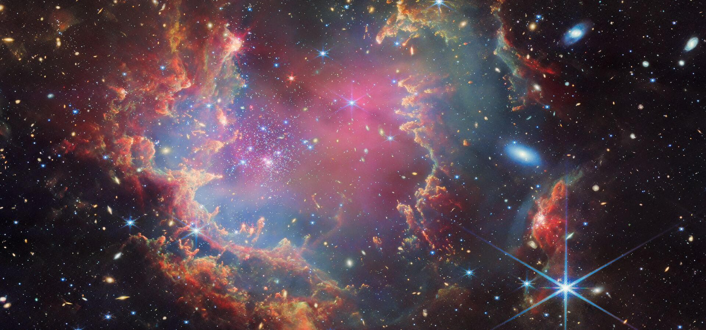

Les voyages interstellaires sont-ils possibles ?
Les défis et avancées de la physique pour explorer l'univers
Introduction :
 Depuis des décennies, les scientifiques et les passionnés de l’espace rêvent d’explorer des systèmes stellaires au-delà de notre galaxie. Si les voyages interplanétaires, comme l’exploration de Mars, sont désormais à portée de main, les voyages interstellaires, eux, représentent un défi de taille. Entre limitations technologiques et défis physiques liés aux distances colossales, une question reste ouverte : est-il réellement possible de voyager vers les étoiles ? Cet article explore les obstacles principaux et les avancées en physique qui pourraient, un jour, permettre de réaliser ce rêve.
Première partie : Les défis physiques et technologiques des voyages interstellaires
Le premier obstacle majeur des voyages interstellaires est la distance. L’étoile la plus proche de la Terre, Proxima Centauri, se situe à environ 4,24 années-lumière. Pour atteindre cette étoile avec les technologies actuelles, cela prendrait des dizaines de milliers d’années ! Ce problème de distance est aggravé par le besoin de grandes quantités d’énergie et de carburant pour propulser un vaisseau à des vitesses inégalées.
Les lois de la physique, notamment la relativité restreinte d’Einstein, imposent également des limites strictes. D’après ces lois, rien ne peut voyager plus vite que la lumière, ce qui rend les voyages interstellaires d’autant plus compliqués. La solution pourrait résider dans de nouvelles formes de propulsion, comme les voiles solaires ou les moteurs à fusion nucléaire, qui permettraient de réduire considérablement le temps de trajet.
Les concepts de vaisseaux spatiaux
L'exploration des voyages interstellaires débute par la conception de vaisseaux spatiaux adaptés à de telles entreprises. Plusieurs concepts, comme le vaisseau de type Starship proposé par SpaceX, sont à l’étude pour leur capacité à effectuer des trajets prolongés dans l'espace. Cependant, des projets plus futuristes, comme les voiles solaires ou les vaisseaux à fusion nucléaire, suscitent un intérêt croissant. Par exemple, la voile solaire utilise la pression de la lumière du soleil pour propulser un vaisseau, une technologie qui pourrait théoriquement permettre d'atteindre des vitesses significatives en utilisant simplement l'énergie solaire. En parallèle, des projets tels que le Project Longshot de la NASA, qui propose un vaisseau alimenté par la fusion pour atteindre Proxima Centauri en moins de 100 ans, illustrent l'ingéniosité humaine face aux défis de la distance interstellaire. Cependant, ces concepts nécessitent des avancées technologiques considérables et des investissements massifs, tant financiers que temporels. Les recherches actuelles dans des domaines tels que la propulsion avancée et les systèmes de soutien de vie sont essentielles pour faire progresser ces idées de la théorie à la pratique.
Deuxième partie : Les avancées et théories prometteuses en physique pour un jour traverser les étoiles
Malgré ces défis, la recherche progresse. Les projets de propulsion avancée, comme ceux de l’initiative Breakthrough Starshot, visent à développer des mini-sondes propulsées par des voiles lumineuses, capables d’atteindre des vitesses proches de 20 % de celle de la lumière. Cela permettrait d’atteindre Proxima Centauri en seulement quelques décennies.
D’autres théories physiques suggèrent des moyens alternatifs pour voyager. Le concept de "trou de ver", une sorte de tunnel dans l’espace-temps, fascine les scientifiques et pourrait théoriquement permettre de raccourcir les distances interstellaires. Cependant, ces idées demeurent spéculatives et posent d’importants problèmes énergétiques et techniques. Enfin, la recherche en physique quantique pourrait ouvrir la voie à des méthodes de propulsion encore inconnues qui transformeraient notre compréhension du voyage spatial.
Les défis scientifiques et technologiques
Les voyages interstellaires ne se limitent pas simplement à la conception de vaisseaux spatiaux. Ils impliquent également des défis scientifiques complexes qui nécessitent des percées technologiques. Par exemple, la gestion des ressources à bord d'un vaisseau en voyage interstellaire pourrait nécessiter des systèmes avancés de recyclage de l'eau et de l'air, ainsi que des méthodes efficaces de production alimentaire, éventuellement basées sur l'hydroponie ou l'aquaponiege pourrait durer des décennies, voire des siècles, ce qui pose des questions cruciales sur la santé physique et mentale des astronautes. Les recherches sur les effets des voyages prolongés dans l'espace, comme l'exposition aux radiations et la microgravité, sont essentielles pour garantir la sécurité des équipages . Enfin, la commstances interstellaires pose également un défi majeur, car les signaux mettent des années à atteindre la Terre, rendant les échanges avec les bases terrestres longs et difficiles. Ces défis, bien que intimidants, stimulent l'innovation scientifique et pourraient ouvrir la voie à de nouvelles technologies qui pourraient également bénéficier à notre vie quotidienne sur Terre.
Conclusion :
 Les voyages interstellaires, bien que fascinants, demeurent pour l’instant au stade de l’utopie. Les distances colossales, les limites de vitesse imposées par la physique, et les besoins énergétiques démesurés représentent autant de défis pour l’humanité. Cependant, les progrès en physique et en technologie ouvrent des perspectives encourageantes. Bien que nous soyons loin d’atteindre les étoiles, la recherche continue de repousser les limites et pourrait, un jour, faire des voyages interstellaires une réalité.